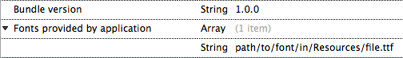
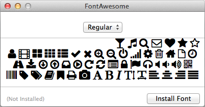
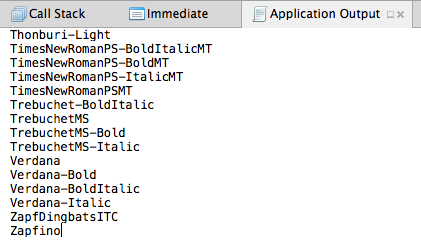
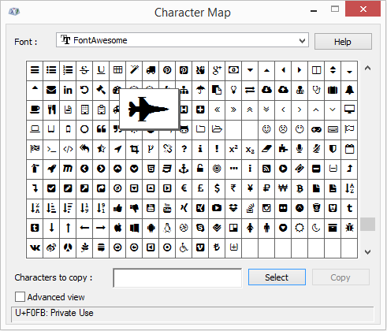
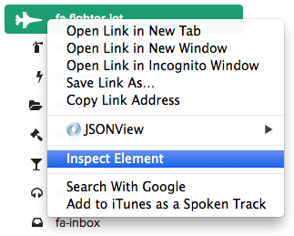
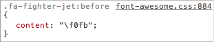

This is the second in a series of Abusing UIKit blog posts giving some background on the development that want into producing Smudges, a simple game written entirely in Xamarin.iOS where fun shapes in various colors show up on the screen wherever a tap is detected. It was original created to give my two-year-old something fun to play while going tap-crazy on the screen. The game evolved from those “play-testing” sessions. If you have your own little ones and want something fun to distract them, Smudges is availabe on the App Store. At this point, I plan to continue adding features to it as I can. Let me know what you think about Smudges, or these blog posts, in the comments below or find @patridgedev on Twitter.
Using an Icon Font
Using an icon font can be great for a typical app for substituting a mess of PNGs. For icons, the size savings is probably minimal, but dealing with a single font file compared to a folder of icon images in numerous DPI variations can be much nicer. Since we are dealing with “plain” text in a label, color is controlled by manipulating the label’s text color. For Smudges, the icon font was all about having something visually enjoyable pop onto the screen beyond a basic rectangular view. Fortunately, most icon fonts have a few characters that are just for fun.
Font, Meet Project. Project, Meet Font
Whether you are using a custom icon font or a regular font in your project, adding it is exactly the same. First, pick your favorite TTF font file. Either drag it onto the Resources folder in Xamarin Studio or right-click to “Add Files…” there. You can also put it in a subfolder within Resources (e.g., “Fonts”) as I did for this project, since later demos may have fonts and sounds.
Once you have a font in your project, there are two more steps to make it work: setting up Info.plist and setting the build action. Since you are already in the solution view, right-click the new font and get its properties. Change the “Build action” to “BundleResource”. Now you need to tell the app that it needs to load custom fonts and which files will be provided by adding some details to Info.plist. Open your projects Info.plist file and change to Source view with the bottom tab choices. Add a new root entry and pick “Fonts provided by application” from the choices. This will create a new array where you will put any file names of the custom fonts within your application bundle. In this case, I added Fonts/fontawesome-webfont.ttf to the array.

With the file bundled and Info.plist all prepped, it’s just a matter of creating a UIFont with the correct font name.
UIFont IconFont = UIFont.FromName("FontAwesome", CharacterSize);
Getting the Font Name
You may not always know exactly what your font’s name is as seen by iOS. The simple way to find it is to open it with the baked-in OS X Font Book application. The font’s name will be shown as the window title.

One other method is to run your app and pull all the available font names and search for the one you think is right for the newly embedded font. (This has the added benefit of verifying you have all the previous steps set up correctly; if the font shows up in this list, the app found it and loaded it.)
// Dump out an alphabetical list of all available font names on the device.
var availableFontNames = UIFont.FamilyNames.SelectMany(familyName => UIFont.FontNamesForFamilyName(familyName)).ToList().OrderBy(fontName => fontName);
Console.WriteLine(string.Join("\n", availableFontNames));
Quite a few fonts are already ready to go for your apps to use in iOS. Given that, you may have trouble finding the name of your new font in that large list. It’s definitely worth trying the Font Book approach before you verify your project is configured correctly using this approach.

Determining character codes
Once you figure out what characters from your font that you want to use, you will need the hexadecimal character codes to use them as strings. While I do tend to look for simple solutions to problems, I haven’t found a simple solution to determining the character codes for a font yet. I often do a silly dance of installing the font in Windows and viewing it within the Character Map application.

Since font icons often use the Unicode private use space, you may have to scroll around to find the characters you want to use. Once you find the character you want to use, write down its character code, F0FB in the case of the fighter jet in the screenshot.
Sometimes you get lucky with an icon font. Font Awesome has a handy listing of icons on their site. If you use your browser’s development tools to inspect the desired icon, you can usually find the hexadecimal code in the CSS.

Once you find the appropriate CSS rule, grab the hexadecimal character code.

From there, take the character code and use it as any normal char (or string) in your C# code.
static readonly UIFont IconFont = UIFont.FromName("FontAwesome", 40f);
//...
char jet = '\uf0fb';
var label = new UILabel(RectangleF.Empty) {
Font = IconFont,
Text = jet.ToString(),
TextColor= someForeColor,
BackgroundColor = someBackgroundColor,
};
label.SizeToFit();
Add(label);
If you happen to see an unusual “W”-looking character, you probably forgot to set it to use your icon font.
Adjusting Your Icon Size
Since your new icons aren’t plain images with pre-determined sizes, you need to figure out the size you want to use. If you can get away with it, figure out your font point size beforehand and roll with it as we did above. If you sizing requirements are more fluid, you will have to put a little more effort into it.
I’ve tried a few different approaches trying to get flexible sizing to work. First, I tried the direct route: set the font size overly large and toggle AdjustsFontSizeToFitWidth to have the system do the hard work. There may be a way to get this to work, but I had less-than-ideal results with that approach.

At some point in playing with iOS, you will probably need to know the size of a string before it ends up on the screen. This is where the various overloads for NSString.StringSize come in. There is even an overload that appears to be designed to return the maximum font size for a given width, but I couldn’t get it to return a useful value. Instead, I created a hack function that calculated the largest font size by trying incrementally larger sizes until StringSize came out too large.
// CAUTION: total hack!
public static float GetMaxFontSize(this string source, UIFont font, SizeF sizeRestriction) {
float maxFontSize = font.PointSize;
SizeF latest = SizeF.Empty;
using (NSString nssDescriptionWithoutHtml = new NSString(source.ToString())) {
while (latest.Width < sizeRestriction.Width && latest.Height < sizeRestriction.Height) {
latest = nssDescriptionWithoutHtml.StringSize(font.WithSize(maxFontSize), sizeRestriction.Width, UILineBreakMode.Clip);
if (latest.Width < sizeRestriction.Width && latest.Height < sizeRestriction.Height) {
maxFontSize += 0.1f;
}
}
}
return maxFontSize;
}
Demo
In the demo, you’ll see a UILabel used with a custom icon font (the jet icon seen here). At the bottom is a slider that controls the size of the label, showing how icon fonts can make for sharp icons at any size. As well, a UIButton with a “refresh” icon is there. When tapped, it spins the jet icon using the rotate animation code from one of my first Xamarin.iOS blog posts.
Demo Source Code
For more details on the font-sizing code or any of the rest of this post’s code, just pop over to the Abusing UIKit for Gaming GitHub repo. The custom font code project has been added to this project, and I’ll be adding new projects to that solution as I add posts to this series.
Picking a font, making your own icon font, resources
When it comes time to finding your own icon font, there are a lot of choices. Font Awesome is nice, and the price and license is nice (read: free). If it meets your needs, you are good to go. If you need something different, though, there are a lot of great icon fonts out there to use.
If you already have your own vector assets, there is also the choice of making your own icon font. Trello switched to an icon font at one point. They even put out a nice blog post about it.
One last shameless plug…
Find Smudges on the App Store, available for iPhone, iPad, or iPod Touch. It’s especially fun on iPad where the hardware allows for ten simultaneous touch points.


{kind=link}
{kind=link}
{kind=link}
{kind=link}
{kind=link}
{kind=link}